FoodLuck MEO 操作説明書 11
クチコミ促進
アンケート、二次元バーコード、メール・SMS依頼を使い、Googleクチコミを無理なく増やすための現場マニュアル
| この資料の目的 クチコミ促進は、お客様にアンケートURLや二次元バーコードを案内し、回答後にGoogleのクチコミ画面へ進んでもらうための機能です。現場では、設定を細かく触るよりも、どのアンケートをどこで配るか、どの声かけでお願いするか、結果をどう見るかが大切です。 |
|---|
| 有料オプションについて クチコミ促進およびSMS送信は、契約内容によって利用可否が異なります。画面にメニューがない、SMSが使えない、送信上限を増やしたい場合はFoodLuck側に確認してください。 |
|---|
1. クチコミ促進でできること
クチコミ促進は、アンケートを作成し、そのURLや二次元バーコードをお客様へ配布する機能です。アンケート回答後にGoogleのクチコミ投稿画面へ進めるため、直接『Googleでクチコミを書いてください』と案内するよりも、お客様が書き始めやすい導線を作れます。
| 機能 | できること | 飲食店での使い方 | 注意点 |
|---|---|---|---|
| アンケート一覧 | アンケートを作成し、URL・二次元バーコードを発行する | 会計後やLINE配信で案内するアンケートを準備する | 回答が入ると内容編集ができなくなる |
| AIレビュー生成アンケート | 回答内容をもとにAIがクチコミ文の作成を補助する | お客様が文章を考える負担を減らす | 文章はお客様自身で確認・修正して投稿する |
| アンケート配布 | 名刺形式やパンフレット形式の依頼用紙をPDFで作る | レジ横、卓上、ショップカードに使う | 作成データは画面内に保存されないためPDFを保管する |
| クチコミ依頼 | メールまたはSMSでアンケートURLを送る | 予約・宴会・常連様へのお礼連絡に使う | SMSは有料オプション、70文字制限あり |
| アンケート結果 | 回答数、評価、コメントを確認する | 月次で声の傾向を見て改善点を探す | Googleに投稿されたクチコミ数とは一致しない場合がある |
FAQ画像: アンケート一覧画面
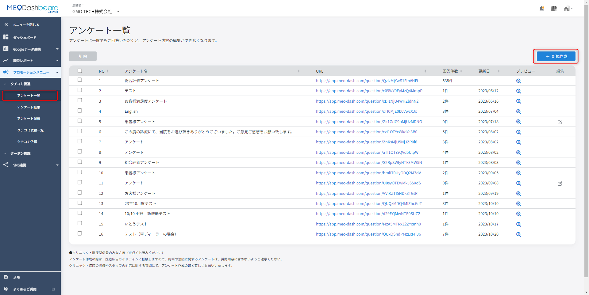
- 左メニューの「プロモーションメニュー」から「クチコミ促進」>「アンケート一覧」を開きます。
- 新しいアンケートを作る場合は、右上の「新規作成」を押します。
- 一覧では、URL、回答件数、プレビュー、編集状態を確認します。
2. 現場で使う基本の流れ
飲食店の現場では、細かい設定を毎日触る必要はありません。最初にFoodLuck側または管理者がアンケートを準備し、店舗では二次元バーコードやURLをお客様に案内し、月に1回結果を見る流れにすると続けやすくなります。
- アンケート一覧で、店舗用のアンケートを作成する。
- 必要に応じて、AIレビュー生成、多言語、回答者情報、デザインを設定する。
- アンケート配布で、名刺形式またはパンフレット形式のPDFを作成する。
- レジ横、卓上、ショップカード、公式LINE、予約後メールなどで案内する。
- アンケート結果を確認し、良かった点と改善点を現場で共有する。
- Googleに投稿されたクチコミには、別資料の「クチコミ返信」に沿って返信する。
| 現場で守ること 『高評価をお願いします』『書いたら特典を渡します』という依頼は避けます。『よろしければ率直なご感想をお聞かせください』のように、良い点も気になった点も書ける伝え方に統一してください。 |
|---|
3. アンケートを作成する
基本のアンケートは、アンケート名、質問、回答項目、回答後の遷移先を設定して作成します。飲食店では、1問目に総合満足度を置き、2問目以降に料理、接客、雰囲気、再来店意向などを聞くと、あとで改善に使いやすい結果になります。
- 左メニューで「プロモーションメニュー」>「クチコミ促進」>「アンケート一覧」を開く。
- 右上の「新規作成」を押す。
- アンケート名を入力する。お客様にも見えるため、店舗名や用途が分かる名前にする。
- 質問タイトルを入力する。例: 本日のご利用満足度を教えてください。
- 回答項目を2つ以上設定する。例: 大変満足、満足、普通、不満、大変不満。
- 回答後の遷移先を「Googleレビューへ遷移」または「ツールレビューへの遷移」から選ぶ。
- 必要な質問を追加し、最後に「アンケート登録」または「登録する」を押す。
FAQ画像: アンケート新規作成の基本
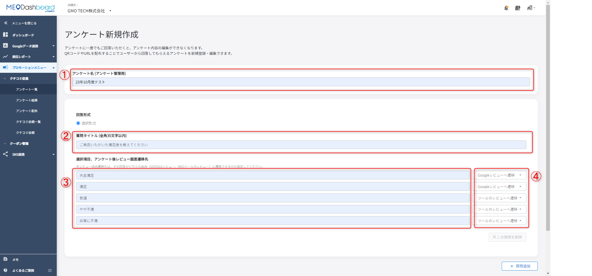
- アンケート名、質問タイトル、選択項目、レビュー遷移先を入力します。
- 2問目以降は自由入力形式も選べます。質問は最大15個まで作成できます。
| 回答後の遷移先の考え方 Googleレビューへ遷移を選ぶと、回答後にGoogleのクチコミ記入画面へ進みます。ツールレビューへの遷移を選ぶと、FoodLuck MEO内のアンケート結果に評価とコメントが残りますが、Googleのクチコミとしては公開されません。 |
|---|
| 編集できる期間 アンケートは、回答が1件も入っていない間だけ編集できます。一度でも回答が入ると、項目の編集や削除ができなくなります。内容を変えたい場合は、新しくアンケートを作成してください。 |
|---|
4. AIレビュー生成・多言語・回答者情報を設定する
AIレビュー生成アンケート
AIレビュー生成アンケートは、お客様の回答をもとに、Googleクチコミに貼り付けやすい文章をAIが作成する機能です。お客様は生成された文章をコピーし、Googleのクチコミ画面で貼り付けたうえで、必要に応じて自分の言葉に修正して投稿します。
- 「アンケート一覧」右上の「新規作成」から「AIレビュー生成アンケート」を選ぶ。
- アンケートURL発行方法を「グループ共通URL発行」または「店舗ごとのURL発行」から選ぶ。
- 質問を最低3問、最大10問まで設定する。回答形式は選択形式、2択形式、自由入力形式から選ぶ。
- 1問目は満足度や総合評価など、Googleレビュー画面へ進める判断に使いやすい質問にする。
- 必要に応じて「Google投稿フォームへクリックのみレビュー遷移」や「アンケート回答者付き」を設定する。
- 画面下部の「登録する」を押し、アンケート一覧のプレビュー・二次元バーコードからURLやコードを取得する。
FAQ画像: AIレビュー生成アンケートの表示例
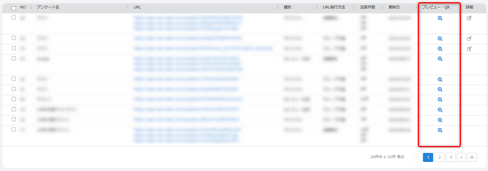
- 回答内容に合わせて、AIがクチコミ文章のたたき台を作成します。
- お客様はコピー後、自分の体験に合うように修正できます。
多言語設定
多言語設定を使うと、日本語に加えて最大3言語までアンケートを用意できます。回答者の端末言語に合わせて表示されるほか、回答画面のプルダウンから言語を切り替えることもできます。インバウンド客が多い店舗では、英語や中国語などを設定しておくと回答しやすくなります。
FAQ画像: 多言語設定
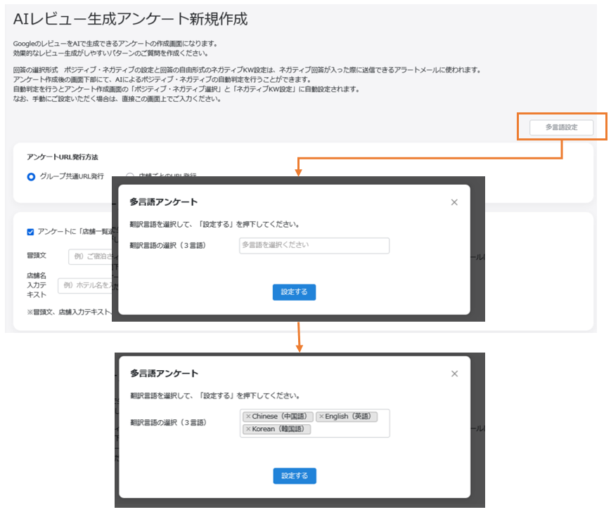
- 新規作成画面の「多言語設定」から翻訳言語を選択します。
- 翻訳処理に少し時間がかかる場合があります。
アンケート回答者付き
アンケート回答者付きを使うと、回答後に氏名やメールアドレスなどの入力欄を表示できます。後日お礼メールやクーポン案内を送りたい場合に使います。ただし、個人情報入力は任意であり、同意がない場合は回答者情報を取得できません。
FAQ画像: 回答者情報の設定
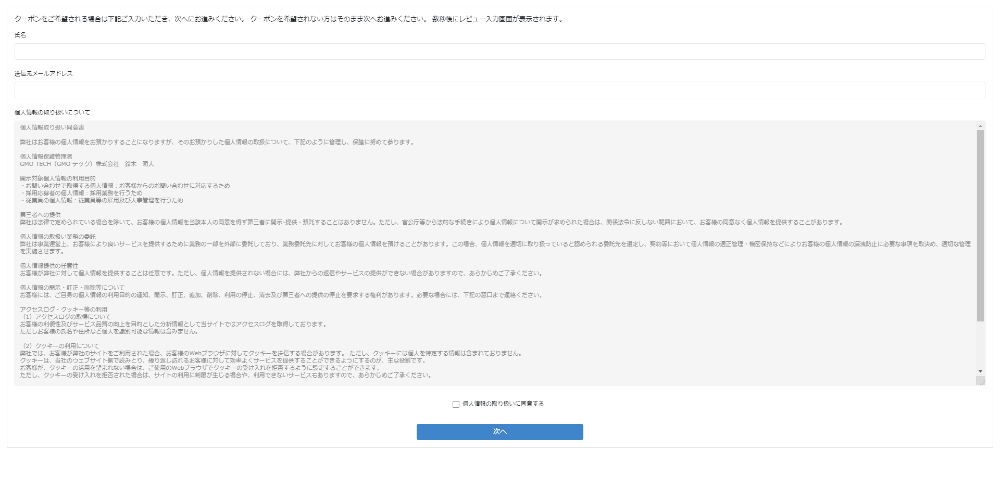
- アンケート新規作成画面の下部で「アンケート回答者付きアンケート」にチェックします。
- 冒頭文、追加項目、注意書き、ON/OFFを設定します。
- 回答者情報は担当者メールアドレス、または設定した送信者メールアドレスへ通知されます。
5. デザインと二次元バーコードを整える
アンケートフォームの色やロゴ、二次元バーコード中央の画像・文字・アイコンを設定できます。レジ横やテーブルで見せるものなので、店舗の雰囲気に合う色にしつつ、読み取りやすさを優先してください。
- アンケートフォームのロゴ画像はJPGまたはPNGを使用します。
- ロゴ画像は10KBから5MB、表示サイズは120px×60pxに自動調整されます。
- 二次元バーコード中央には、画像、アイコン、文字のいずれかを配置できます。
- 文字を入れる場合は全角・半角合計5文字以内です。
- 二次元バーコード中央に置く画像は10KBから5MB、推奨解像度は縦1200px、横2000pxです。
- デザイン変更後も、変更前に発行した二次元バーコードは利用できます。
FAQ画像: 二次元バーコードデザイン設定
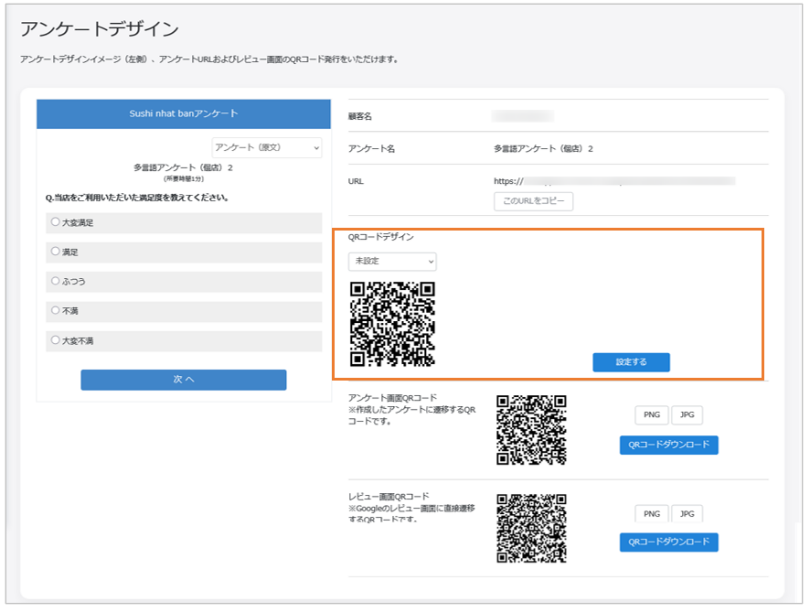
- アンケート一覧のプレビュー・二次元バーコードから、二次元バーコードデザインを設定します。
- 読み取りにくくなるため、細かすぎる画像や長い文字は避けます。
FAQ画像: アンケートフォームのデザイン設定
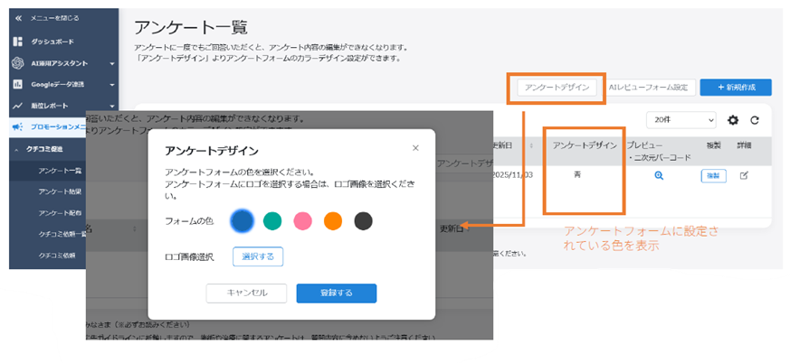
- アンケートデザインメニューから、フォーム全体の色やロゴを調整できます。
- 店舗ブランドよりも、まずお客様が読みやすいことを優先してください。
6. URL・二次元バーコードを配布する
アンケートを作成したら、お客様に見せるためのURLまたは二次元バーコードを準備します。飲食店では、テーブル上、会計時、レシート同封、ショップカード、LINE配信、予約後メールなどを組み合わせると取りこぼしが減ります。
- 左メニューで「プロモーションメニュー」>「クチコミ促進」>「アンケート配布」を開く。
- 名刺形式またはパンフレット形式を選ぶ。
- 表示する二次元バーコードを「アンケート画面」または「Googleクチコミ画面」から選ぶ。
- 対象アンケート名を選ぶ。
- パターン、カラー、タイトル名、本文を入力する。
- 「PDFファイル出力」を押し、出力したPDFを保管して印刷する。
FAQ画像: 個別店舗のアンケート配布
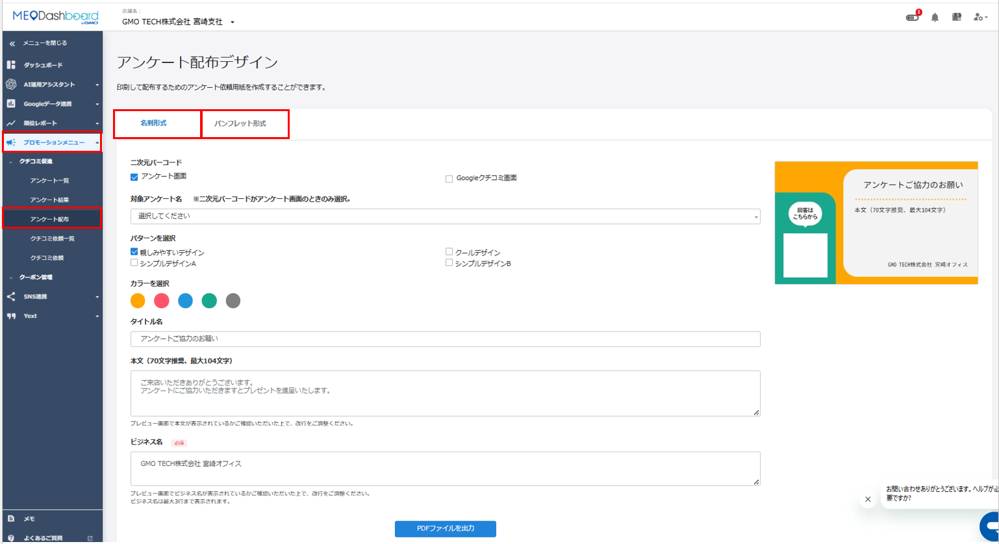
- 名刺形式はA4に10枚分印刷されるため、ショップカードとして配布しやすい形式です。
- パンフレット形式はA4またはB5で、店内掲示や卓上POPに向いています。
FAQ画像: グループのアンケート配布
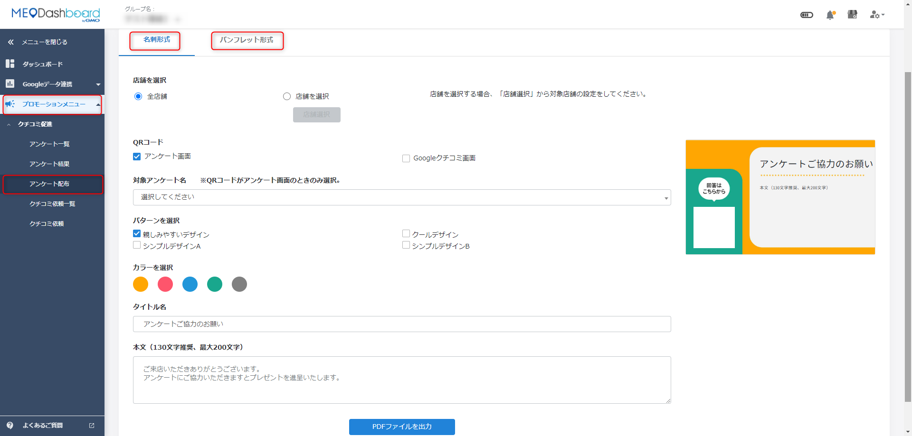
- 複数店舗を管理する場合は、全店舗分または一部店舗分の配布物をまとめて作成できます。
- 各店舗の電話番号を出したい場合は、共通TEL欄を空白にして店舗基本情報から反映させます。
| 配布PDFの注意 アンケート配布で作成した依頼用紙のデータは、ダッシュボード内に保存されません。出力したPDFは、店舗側で分かる場所に保管しておいてください。 |
|---|
7. グループ共通URLと店舗ごとのURL
複数店舗で使う場合、1つのURLからお客様が店舗を選ぶ方法と、店舗ごとに別々のURLを発行する方法があります。現場で配る場合は、店舗ごとのURLのほうが、お客様が店舗を選ぶ手間が少なくなります。
| 方式 | 向いている使い方 | 注意点 |
|---|---|---|
| グループ共通URL発行 | 本部や共通LINEから全店共通で案内する | お客様が店舗名や都道府県から対象店舗を選ぶ |
| 店舗ごとのURL発行 | 各店舗のレジ横POP、卓上カード、店舗LINEで案内する | 店舗選択の手間がないため現場配布向き |
| リダイレクト設定 | 共通URLを保ったまま、遷移先アンケートを差し替える | グループ共通URLで店舗名選択できるアンケートが対象 |
FAQ画像: 全店舗共通URLの作成
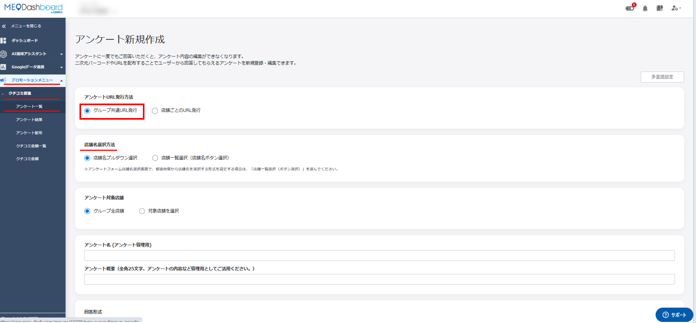
- 「アンケートURL発行方法」でグループ共通URL発行を選ぶと、全店舗共通のURL・二次元バーコードを作れます。
- 店舗を追加した場合は、自動的にグループアンケートの対象に追加されます。
FAQ画像: 店舗ごとのURL作成
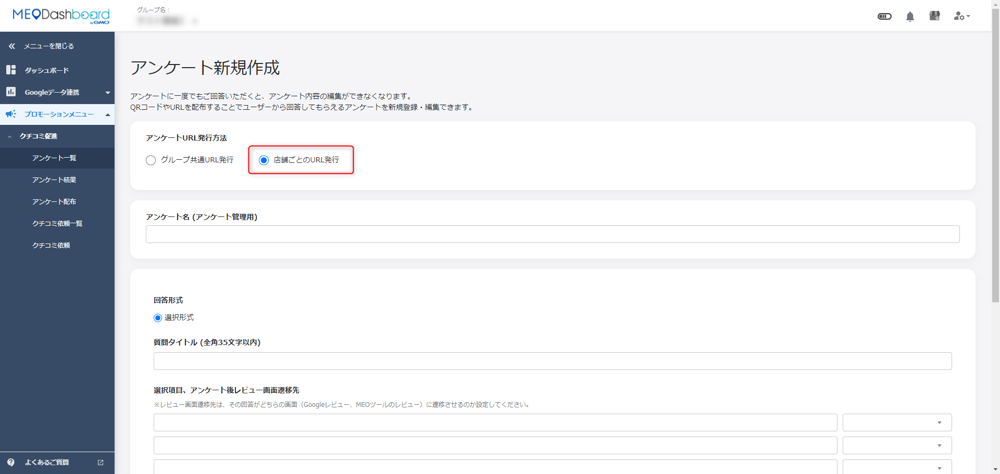
- 店舗ごとのURL発行を選ぶと、店舗別にURL・二次元バーコードを発行できます。
- FAQ上では、URLの表示は最大10店舗までの仕様とされています。
FAQ画像: グループ共通URLのリダイレクト設定
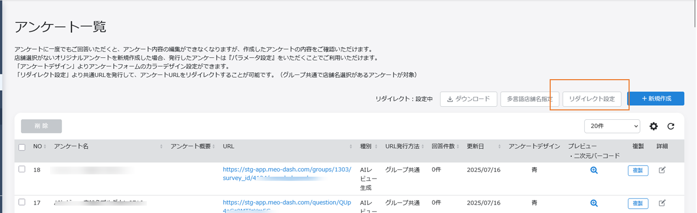
- リダイレクト設定では、共通URLの遷移先アンケートを変更できます。
- 解除する場合は、リダイレクト設定画面で解除します。
8. メール・SMSでクチコミ依頼を送る
クチコミ依頼では、来店されたお客様へメールまたはSMSでアンケートURLを送れます。予約台帳や宴会後の連絡先を使って送る場合は、個人情報の取り扱いに注意し、無理な依頼にならない文面にします。
- 左メニューで「プロモーションメニュー」>「クチコミ促進」>「クチコミ依頼」を開く。
- 送信タイプでメールまたはSMSを選ぶ。
- お客様名、送信先メールアドレスまたは携帯電話番号を入力する。
- 件名と本文を入力する。テンプレートを使う場合は、テンプレートを選択する。
- 対象アンケート名を選ぶ。
- 必要に応じて添付ファイルを選ぶ。
- 送信日時を設定し、「送信」を押す。
FAQ画像: クチコミ依頼の送信画面
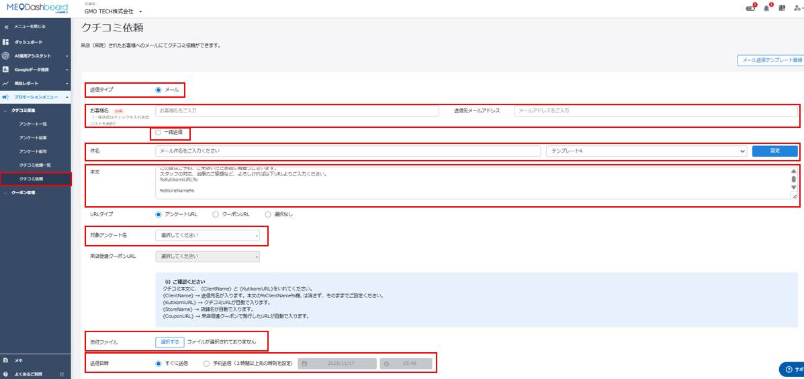
- 一括送信を使う場合は、フォーマットをダウンロードして、メールリストまたは携帯電話番号リストを作成します。
- メールの送信元は noreply@meo-dash.com です。
テンプレート登録
よく使うメール文面は、メール送信テンプレートとして最大5個まで登録できます。テンプレート本文では、下記の差し込み文字列を消さないようにしてください。
- %ClientName% : 送信先名が入ります。
- %KutikomiURL% : クチコミURLが自動で入ります。
- %StoreName% : 店舗名が自動で入ります。
FAQ画像: メール送信テンプレート登録
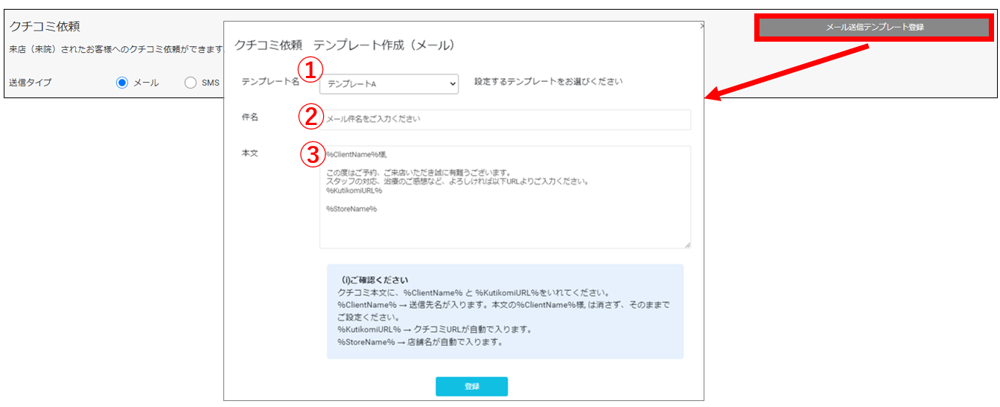
- テンプレート名、件名、本文を入力し、最後に登録します。
- 一括送信用のテンプレートも、クチコミ依頼画面から登録できます。
送信に関する制限
| 項目 | 内容 | 現場での注意 |
|---|---|---|
| SMS送信 | 有料オプション契約と月間送信上限の相談が必要 | 使えない場合はFoodLuck側に確認 |
| SMS文字数 | 本文は70文字まで。アンケートURLも文字数に含まれる | 短いお礼文にしてURLを入れる |
| メール文字数 | 本文の文字数制限はなし | 長すぎると読まれにくいため簡潔にする |
| 予約期間 | システム上は期限なし。何年先でも予約可能 | 送信日時の入力ミスに注意 |
| 送信記録 | クチコミ依頼一覧で確認できるが、宛先は確認できない | 送信前に宛先リストを必ず見直す |
9. アンケート結果を見る
アンケート結果では、対象アンケートと期間を指定して、回答数や評価、コメントを確認します。Googleの公開クチコミを見る画面ではなく、FoodLuck MEO内で集計されたアンケート回答を見る画面です。
- 左メニューで「プロモーションメニュー」>「クチコミ促進」>「アンケート結果」を開く。
- 対象アンケート名を選ぶ。
- 期間を選ぶ。個別店舗では1週間、1ヶ月、3ヶ月、カスタム期間を選べます。
- グループ画面では、対象年月と店舗選択を指定します。
- グラフ、件数、ユーザーレビューを確認する。
- 回答者付きアンケートの場合は、必要に応じてダウンロードして回答者情報を確認する。
FAQ画像: 個別店舗のアンケート結果
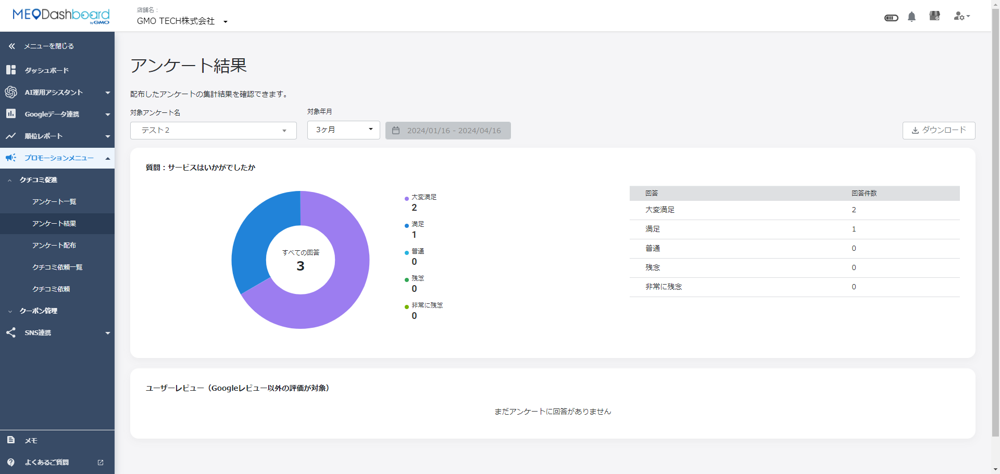
- 個別店舗では、選択した期間の回答結果を店舗単位で確認します。
- ツールレビューへ遷移した回答は、ユーザーレビュー欄で評点とコメントを確認できます。
FAQ画像: グループのアンケート結果
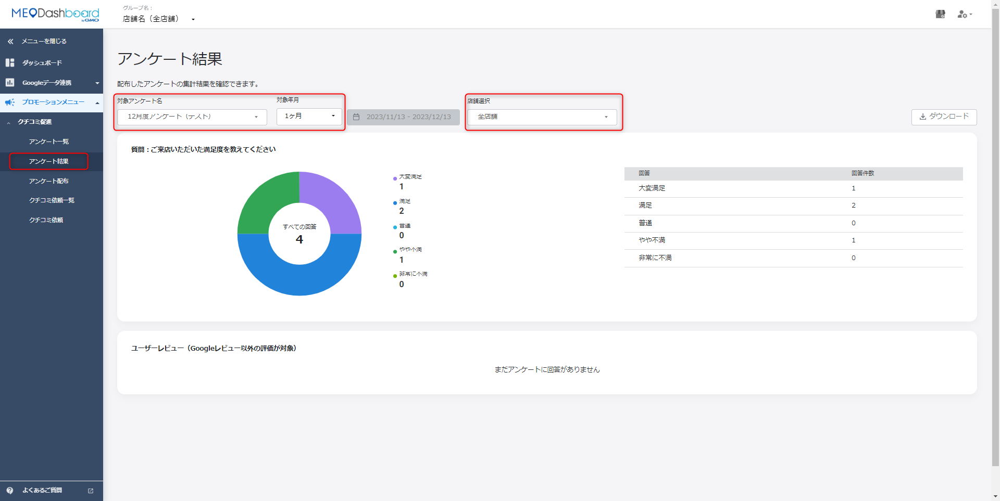
- グループ画面では、全店共通の合計と、店舗別の結果を切り替えて確認できます。
- 複数店舗で同じ施策を行った場合は、回答数の差から声かけや設置場所の差を見ます。
10. クチコミを増やす現場運用
クチコミを増やすには、画面設定だけではなく、お客様が書きやすいタイミングと声かけを作ることが重要です。飲食店では、会計直後、予約・宴会後のお礼連絡、公式LINE、ショップカード、レシート同封などを組み合わせます。
□ どんなクチコミを増やしたいかを決めた。例: ランチ、接客、個室、宴会、季節メニュー。
□ 依頼文に、料理・接客・雰囲気など書いてほしい内容のヒントを入れた。
□ レジ横、卓上、ショップカード、レシートなど、お客様が見やすい場所に二次元バーコードを置いた。
□ スタッフの声かけ文を統一した。
□ メール・LINE・予約後連絡など、お声がけ以外の接点も用意した。
□ 月1回、アンケート結果とGoogleクチコミ数を確認した。
□ 投稿されたクチコミには、良い内容も厳しい内容も返信した。
| 声かけ例 『本日はご来店ありがとうございました。もしよろしければ、こちらの二次元バーコードから率直なご感想をいただけると、今後の改善の参考になります。』このように、評価を指定せず、良い点も気になった点も書ける言い方にします。 |
|---|
FAQ画像: お声がけ以外の導線づくり
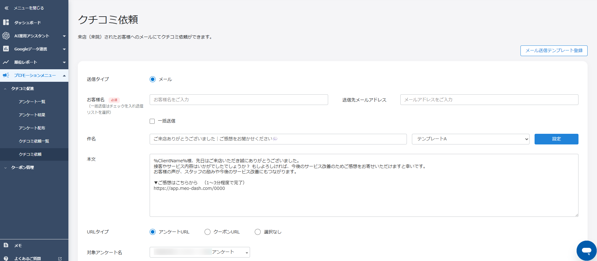
- 来店時、会計時、退店後、団体利用後など、お客様との接点を整理します。
- スタッフが毎回お願いしなくても、メールやLINE、カードで自然に案内できる導線を作ります。
禁止・注意したい依頼
- クチコミ投稿の見返りに割引、ドリンク無料、粗品などを提供しない。
- 高評価だけをお願いしない。例: 星5でお願いします、星4以上でお願いします。
- 低評価になりそうなお客様だけGoogle投稿へ進ませないようにする運用は避ける。
- その場で必ず書いてください、今この場で投稿してください、と断りにくい状況を作らない。
- お客様の自由な意思で書けるようにし、投稿内容の指定や強制をしない。
| ガイドライン違反のリスク Googleのルールに反した集め方をすると、クチコミが削除されたり、店舗情報の表示に影響が出る可能性があります。数を急ぐよりも、自然なお願いを継続することを優先してください。 |
|---|
11. よくある困りごと
| 困りごと | 確認すること | 対応 |
|---|---|---|
| クチコミ促進メニューが見当たらない | 契約プラン、有料オプション、権限 | FoodLuck側に確認する |
| SMSが送れない | SMSオプション契約、月間送信上限 | 送信上限と利用可否を確認する |
| アンケート内容を編集できない | 回答が1件以上入っていないか | 新しいアンケートを作り直す |
| 配布用紙を再編集したい | PDFを保存しているか | 画面内には保存されないため再作成する |
| お客様情報の宛先を後から見たい | クチコミ依頼一覧の仕様 | 送信記録は見られるが宛先は確認できないため、送信前リストを保管する |
| 回答者情報メールが届かない | 担当者メールアドレス、送信者メールアドレス | 右上のビルアイコン>設定>店舗でメール設定を確認する |
| Googleのクチコミ数とアンケート結果が合わない | Google投稿へ進んだか、ツールレビューへ進んだか | アンケート結果とGoogle公開クチコミは別物として確認する |
12. 関連機能: クーポン取得位置情報
クチコミ促進カテゴリ内には、クーポン取得時の位置情報設定に関するFAQも含まれています。クーポン施策を使う場合、位置情報を『必須』にするか『任意』にするかで、お客様の取得しやすさと分析できる情報が変わります。
| 設定 | お客様側の動き | 取得できる情報 |
|---|---|---|
| 必須 | 位置情報を許可しないとクーポンをダウンロードできない | 取得位置を使った来店経路やエリア情報を見やすい |
| 任意 | 位置情報を許可しなくてもクーポンをダウンロードできる | 位置情報を許可しない場合、来店経路や取得者情報のエリアは表示されない |
FAQ画像: クーポン取得位置情報の表示例
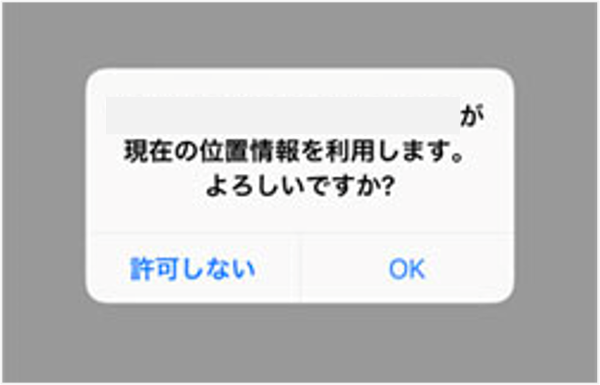
- クーポン機能を使う場合は、お客様の取得しやすさを優先するか、分析情報を優先するかで設定を選びます。
13. 飲食店の月次チェックリスト
□ アンケートのURL・二次元バーコードが今も正しく開くか確認した。
□ 卓上、レジ横、ショップカード、LINEなど、配布導線が途切れていないか確認した。
□ アンケート結果で回答数、評価、コメントを確認した。
□ Googleに新しく投稿されたクチコミを確認し、返信した。
□ クチコミで多く出た料理名、接客、雰囲気、改善点を現場で共有した。
□ 声かけ文が『高評価依頼』になっていないか確認した。
□ 必要に応じて、新しい季節メニューや宴会向けの依頼文に差し替えた。
| 運用のコツ クチコミ促進は、1回作って終わりではなく、月に1回だけでも数字と内容を見返すことで効果が出やすくなります。現場の忙しさを考えると、毎日見るよりも『月初に10分確認する』運用のほうが続きます。 |
|---|
14. この資料に反映したFAQ記事
クチコミ促進カテゴリ配下のFAQ記事を、現場の運用順に再構成して反映しています。アンケート作成、配布、メール・SMS依頼、結果確認、注意事項、関連機能に分けて整理しました。
| No. | FAQ記事 | 反映先 |
|---|---|---|
| 1 | AIレビュー生成アンケートを作成する方法 | 4. AIレビュー生成 |
| 2 | SMS送信の条件について | 8. メール・SMS |
| 3 | 【グループ】アンケート結果の見方 | 9. 結果確認 |
| 4 | 【グループ】アンケート配布について | 6. 配布 |
| 5 | 【個別店舗】アンケート結果の見方 | 9. 結果確認 |
| 6 | 【個別店舗】アンケート配布について | 6. 配布 |
| 7 | お声がけ以外でクチコミを集めやすくする方法 | 10. 現場運用 |
| 8 | アンケートURL リダイレクト処理（グループのみ） | 7. グループURL |
| 9 | アンケートの二次元バーコードデザイン設定方法 | 5・6. QR |
| 10 | アンケートの多言語設定の使用方法 | 4. 多言語 |
| 11 | アンケートの編集方法 | 3・11. 編集制限 |
| 12 | アンケートの編集方法 | 3・11. 編集制限 |
| 13 | アンケートを作成する方法 | 3・4. 作成 |
| 14 | アンケートフォームのデザイン変更方法 | 5. デザイン |
| 15 | アンケート回答者付きアンケートの見え方（ユーザー側） | 4・9. 回答者情報 |
| 16 | アンケート回答者付の使用方法 | 4・9. 回答者情報 |
| 17 | アンケート機能の概要 | 1. 概要 |
| 18 | クチコミを書いてもらいやすくする方法 | 10. 現場運用 |
| 19 | クチコミ依頼のNG行為 | 10. 注意事項 |
| 20 | クチコミ依頼の予約時間変更方法 | 8・11. 送信 |
| 21 | クチコミ依頼の使用方法 | 8. メール・SMS |
| 22 | クチコミ依頼の送信元メールアドレス | 8. メール・SMS |
| 23 | クチコミ依頼の送信方法について | 8. メール・SMS |
| 24 | クチコミ促進アンケートの編集可能期間について | 3・11. 編集制限 |
| 25 | クチコミ促進機能のSMSの文字数制限 | 8. メール・SMS |
| 26 | クチコミ促進機能のメールの文字数制限 | 8. 制限 |
| 27 | クチコミ促進機能を使って、SMSないしメールで送られたお客様情報について | 8. メール・SMS |
| 28 | クチコミ促進機能使用方法（URL） | 6・7. URL |
| 29 | クチコミ促進機能使用方法（二次元バーコード） | 5・6. QR |
| 30 | クチコミ収集時の注意点 | 10. 注意事項 |
| 31 | クーポン取得位置情報 「必須」「任意」の設定 | 12. 関連機能 |
| 32 | メールからアンケートを送る場合の予約期間 | 8・11. 送信 |
| 33 | メール送信テンプレート登録方法 | 8. テンプレート |
| 34 | レビュー画面二次元バーコードについて | 5・6. QR |
| 35 | 一括送信テンプレート登録方法について | 8. テンプレート |
| 36 | 個別店舗ごとに異なるURLのアンケートを作成する方法 | 3・4. 作成 |
| 37 | 全店舗共通URLのアンケートを作成する方法 | 3・4. 作成 |